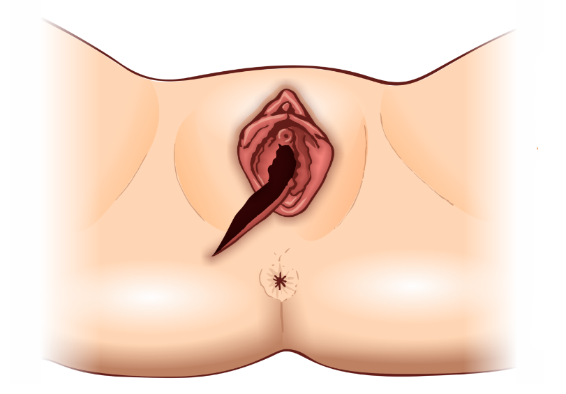
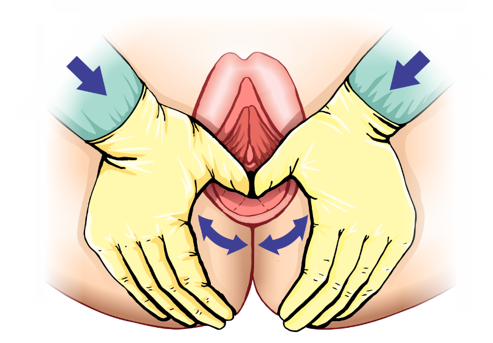
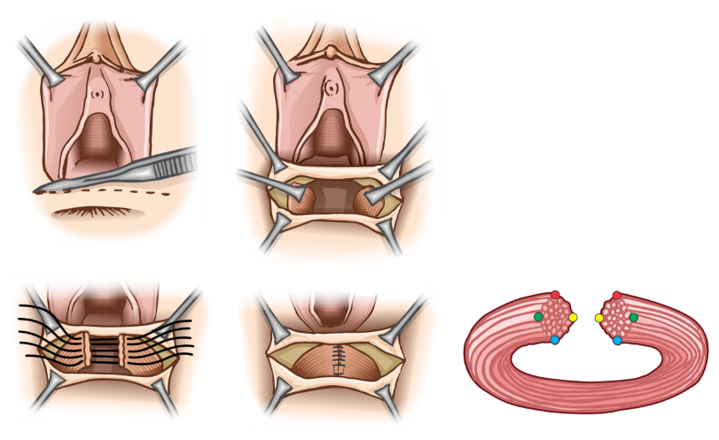
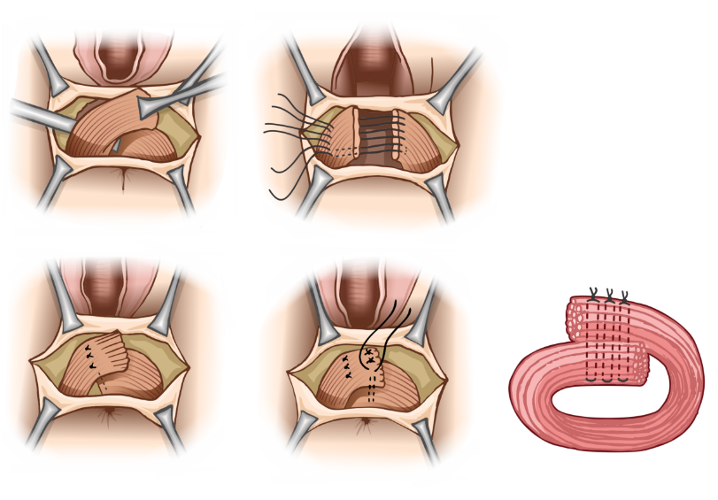

Aula 4
Episiotomia e Trauma Perineal
Introdução
Lacerações perineais complicadas (3° e 4° graus; Obstetrics Anal Sphincter Injury - OASIS) e não complicadas (1° e 2° graus) são lesões associadas ao parto vaginal. As lacerações complicadas envolvem o complexo do esfíncter anal e, nos casos mais graves, a mucosa anal e/ ou retal. Além da morbidade em curto prazo (dor perineal, deiscência da ferida), o trauma perineal complicado se apresenta como um importante fator de risco para incontinência fecal subsequente.
A episiotomia é uma intervenção realizada para ampliar o canal de parto e facilitar o desprendimento fetal. Devido à sua associação com complicações (hematomas, infecções, lesões esfincterianas), seu uso rotineiro caiu em desuso. Atualmente, esse procedimento deve ser restrito a situações clínicas que aumentam o risco de lacerações perineais complicadas (ex.: parto vaginal operatório, manobras cirúrgicas internas) ou diante de hipóxia fetal indicativa de aceleração do parto vaginal.
Nesta aula serão apresentados os seguintes conteúdos: epidemiologia, aspectos clínicos e manejo de lacerações perineais associadas a parto vaginal. Você terá acesso também a uma revisão das indicações e os riscos e benefícios da episiotomia.
Anatomia do períneo feminino e lacerações perineais
O períneo feminino é o local mais comum de ocorrência de trauma relacionado ao parto.
As lacerações perineais são classificadas em quatro graus. Vamos conhecê-los a seguir?
Períneo feminino

Esse tipo de lesão é mais simples, se restringe à mucosa, não sangra e pode ser tratada conservadoramente por meio de vigilância clínica e cuidados de higiene, evitando suturas.
As lacerações de 2° grau também não são complicadas, mas, além da mucosa, há comprometimento da musculatura perineal, porém sem lesões da musculatura dos esfíncteres. No entanto, esse tipo de lesão sempre exige reparo cirúrgico.
É considerada uma lesão complicada, pois causa comprometimento da musculatura esfincteriana. É subdividida de acordo com o grau de acometimento do esfíncter anal externo e lesão do esfíncter anal interno. Conheça quais são os tipos de laceração de 3º grau:
- Tipo A: comprometimento de até 50% da espessura do esfíncter anal externo.
- Tipo B: comprometimento entre 50 e 100% da espessura do esfíncter anal externo.
- Tipo C: comprometimento dos esfíncteres interno e externo.
Nesse caso, ocorre a ruptura completa do corpo perineal , com lesão total dos esfíncteres e do canal anal e/ou reto, sendo por isso considerada uma laceração complicada.
Uma particularidade desse tipo de lesão é a ruptura em “casa de botão” (rectal buttonhole tear), em que, apesar de a musculatura perineal ficar intacta, ocorre lesão completa da mucosa retal, em um nível mais superior da parede vaginal posterior. Nessa situação o períneo se mantém íntegro ou pouco lesado, sua avaliação visual é normal, e a lesão é diagnosticada somente por meio de toque retal e de avaliação minuciosa da parede vaginal posterior.
O corpo perineal apresenta formato de losango, sendo anatomicamente delimitado pelas tuberosidades isquiáticas, cóccix e pube. Ele é formado por diversos músculos, todos de dimensões reduzidas, e a integridade desses músculos é primordial para a manutenção da continência urinária e fecal. Traçando-se uma linha imaginária que passa pelas tuberosidades isquiáticas, o corpo perineal é didaticamente dividido em trígonos anterior e posterior.
Períneo e diafragma urogenital feminino

Clique aqui e saiba mais sobre lacerações perineais complicadas.
Episiotomia
Você sabia que a episiotomia já foi uma prática rotineira na Pré-natal de Qualidade hospitalar? Somente no início do século XXI, devido a evidências científicas, a recomendação desse procedimento foi alterada.
Ao longo do tempo, foram catalogadas as principais complicações da episiotomia, como: hematomas, deiscências, infecções, lesões do esfíncter anal (externo e interno) e lacerações perineais complicadas (3° e 4° graus - OASIS). Vale destacar que essas complicações estão mais relacionadas a episiotomias medianas e episiotomias mediolaterais realizadas com ângulos < 30° e> 60°.
Tipos de episiotomia

Veja agora um histórico da episiotomia, desde seu primeiro relato até os dias atuais.
Nesse ano ocorreu o primeiro relato sobre episiotomia. O procedimento foi criado por Felding Ould, que servia como “Second Master” em um hospital na Irlanda. Sir Ould preconizava a incisão somente quando necessário, em partos mais difíceis, como uma intervenção para auxiliar o desprendimento fetal.
a
1998
Os dados do Instituto Canadense para Informação em Saúde revelaram que, nesse período, a prática de episiotomia restritiva (seletiva) causou aumento das lacerações de 1° e 2° graus e estabilidade nas lacerações perineais complicadas. Também foi ressaltado que, ao não realizar a episiotomia, um percentual relevante de lacerações perineais de 1° grau ocorreram no compartimento anterior do períneo (lacerações parauretrais, em pequenos lábios, clitoridianas e no compartimento anterior do vestíbulo).
e
1998
Na Inglaterra, a taxa de episiotomia nesse período foi reduzida para 15% em todos os partos e alcançou 11% entre os partos espontâneos com apresentação cefálica.
Considerando as evidências, o American College of Obstetricians and Gynecologists (ACOG) passou a recomendar a prática de episiotomia restritiva a partir desse ano, enfatizando que os melhores dados disponíveis à época não suportavam o uso rotineiro ou liberal do procedimento, devendo este se restringir a indicações tais como prevenção de lacerações maternas graves ou facilitação e resolução de dificuldades no parto. Comentava que, embora as taxas de episiotomia tivessem declinado no final do século XX, era ainda um dos procedimentos mais realizados na obstetrícia norte-americana.
Uma revisão sistemática da Cochrane comparou a episiotomia de rotina com a episiotomia seletiva por meio da compilação de dados provenientes de 12 ensaios clínicos randomizados (ECR), totalizando 6.177 pacientes. Houve redução de 30% na taxa de trauma perineal grave e média de 27ml a menos na perda sanguínea com episiotomia seletiva. Os dois grupos apresentaram pouco ou nenhum efeito no índice de Apgar < 7 no 5° minuto. Não houve diferença nas taxas de infecção perineal, dor moderada ou grave, dispareunia, infecção urinária e prolapso genital em longo prazo, tampouco no trauma perineal grave associado a parto vaginal operatório. Não foram encontrados efeitos modificadores nas análises dos subgrupos de acordo com a paridade (primíparas ou multíparas) e nem com a técnica cirúrgica utilizada (episiotomia mediana ou mediolateral). O estudo concluiu que as políticas seletivas de episiotomia não estão relacionados aos prejuízos na saúde materna e neonatal, que episiotomia de rotina não reduz trauma perineal grave, e que eram ainda necessárias mais pesquisas sobre episiotomia de rotina em parto vaginal operatório. Ficou recomendado que, se o parto vaginal operatório não estiver indicado, a episiotomia seletiva promove menos trauma perineal grave.
Atualmente, os guidelines de parto vaginal operatório das principais entidades de Obstetrícia e Ginecologia (ACOG, 2015; RCOG, 2020) não recomendam o uso rotineiro de episiotomia em aplicação de fórceps e/ou de vácuo-extratores. Portanto, episiotomias não devem ser rotineiras em nenhuma circunstância da Pré-natal de Qualidade.
As indicações atuais de episiotomia (seletiva) se restringem a parto vaginal complicado (parto pélvico, distocia de ombro, parto com fórceps, extração a vácuo), em situações de alto risco de lacerações perineais graves, presença de cicatrizes na genitália ou de lacerações perineais mal curadas, distocias importantes de tecido mole e estado fetal não tranquilizador. A taxa recomendada pela OMS é de 10%. Episiotomias medianas devem ser evitadas; quando indicada recomenda-se a episiotomia mediolateral, realizada com ângulo entre 30° e 60°.
Incisão mediolateral
Sobre essas evidências e recomendações, a incidência ideal de episiotomias permanece controversa na literatura e entre os profissionais de saúde. Um estudo observacional realizado em uma maternidade terciária na França em 2024, avaliou a associação entre redução de episiotomia e incidência de OASIS em um período de 10 anos, e buscou compreender as razões por meio de entrevistas a 20 profissionais (médicos obstetras e parteiras). Veja os resultados desse estudo com 37.942 mulheres:
- Episiotomia nas mulheres estudadas foi de 16,1%, e a de OASIS de 1,4%.
- A realização de episiotomia diminuiu de 25% para 7,6% ao longo dos 10 anos estudados.
-
A incidência de OASIS aumentou (OR 1,35; IC95%: 1.09-1,67) nos anos em que houve queda da episiotomia abaixo de 10%.
As entrevistas revelaram aparente consciência dos profissionais de que a redução nas taxas de episiotomias, determinadas por mudanças na política departamental, exige redefinição da relação risco/benefício e aquisição de novas habilidades na assistência ao período expulsivo, podendo levar a aumento na incidência de OASIS. Eles concluíram que a redução na incidência de episiotomia parece se associar a um aumento na incidência de OASIS e que sua incidência ideal permanece indefinida.
Prevenção do trauma perineal
Evidências científicas apontam que trauma perineal associado ao parto é potencial-mente prevenível. Uma revisão da Cochrane (2017), que compilou dados de 22 ECR, totalizando 15.181 mulheres, revelou que aplicação perineal de compressas mornas e massagens durante o trabalho de parto reduziram as lacerações perineais complicadas e que a prática de hands-off também contribui para reduzir a episiotomia.
Além de compressas mornas e massagem perineal, outros procedimentos e orientações durante o período expulsivo também parecem contribuir para reduzir trauma perineal grave (3° e 4° graus - OASIS). Um estudo de coorte realizado na Noruega em duas etapas (2003/2005 e 2008/2010) investigou os efeitos de um programa que implementou quatro componentes durante a deflexão do polo cefálico (“cabeça coroando”). As intervenções incluíram:
- Alentecimento do desprendimento cefálico por meio de contenção efetuada com uma mão (hands-on).
- Suporte perineal com a outra mão apertando os dedos polegar e indicador das porções laterais para a rafe perineal, ou seja, promovendo redução da pressão no centro tendíneo do períneo.
- Orientação contrária aos puxos voluntários.
-
Indicação e realização correta de episiotomia (mediolateral).
As duas coortes totalizaram 31.709 partos e 907 casos de OASIS. A implementação dos quatro componentes na assistência ao período expulsivo reduziu a taxa de OASIS de 4% para 1,9%, compreendendo redução total de 50%.
A prevenção de trauma perineal grave não deve se restringir ao trabalho de parto. As evidências científicas apontam que massagem perineal antenatal também apresenta potencial para reduzir OASIS. Uma revisão Cochrane (2013) de 4 ECR e quasi-randomizados (n = 2.497) revelou que qualquer método de massagem digital antenatal, realizado por no mínimo quatro semanas, contribuiu para reduzir:
- Trauma perineal e aplicação de suturas.
- Realização de episiotomias.
- A dor dentro dos três meses do pós-parto, apenas para mulheres com parto vaginal anterior.
Não foram observadas diferenças nas taxas de lacerações perineais de todos os graus e não ocorreram diferenças nas incidências de parto vaginal operatório, satisfação sexual, e incontinência urinária, fecal ou de flatus.
Portanto, o estudo concluiu que massagem perineal no período antenatal reduz as chances de trauma perineal (principalmente episiotomia) e de relatos de dor no pós-parto, sendo uma prática bem aceita. Foi comentado que as gestantes devem estar cientes dos benefícios e das técnicas de massagem perineal antenatal.
As massagens devem ser diárias, com duração de 10 minutos. Devem ser iniciadas a partir da 30ª semana gestacional e são úteis após episiotomias (com uso de pomadas anes-tésicas). Os passos para a realização de massagem perineal antenatal incluem:
Passos para realização de massagem perineal antenatal
Clique aqui e saiba mais sobre o dispositivo Epi-No.
Reparo cirúrgico perineal
O reparo de lacerações perineais exige técnica cirúrgica apurada, principalmente em lacerações perineais complicadas (OASIS). Os fios recomendados para esse procedimento são o poliglecaprone (Monocryl®), a poligalactina (Vicryl®) ou o categute, preferencialmente n° 3.0. Habitualmente, anestesia local é satisfatória para a correção cirúrgica. Entretanto, anestesia locorregional por meio de bloqueio bilateral do nervo pudendo é uma ótima opção para a correção de lacerações mais extensas. Outras opções são analgesia inalatória ou por via intravenosa, raquianestesia ou complementação analgésica de uma epidural contínua já instalada.
A correção das lacerações é diferente para cada grau de lesão. Veja a recomendação para lacerações de 2º grau:
Já as lacerações de 3° e 4º grau incluem a sutura do músculo esfíncter anal externo. Antes do reparo do esfíncter anal externo, o músculo esfíncter anal interno deve ser identificado e reaproximado, e nem sempre sua identificação será fácil. Habitualmente ele será percebido como uma faixa longitudinal fibrosa pálida, localizada entre a mucosa retal e o esfíncter anal externo. Eventualmente não é possível distingui-lo da mucosa retal. Uma vez identificado, seu reparo deve ser realizado por meio de sutura simples ou contínua.
São duas as técnicas recomendadas para o reparo do músculo esfíncter anal externo. No reparo ponta a ponta, cada extremidade do músculo lesado é previamente reparada. Após aproximação das extremidades do esfíncter, são aplicados quatro pontos simples, cada um aproximando as pontas de cada extremidade.
Reparo ponta a ponta do esfíncter anal
No reparo por sobreposição, as extremidades reparadas são tracionadas e sobrepostas. São aplicados 3 pontos em U, transpassando-se as duas extremidades do músculo. Parece não existir superioridade de nenhuma das técnicas, ficando então como escolha do cirurgião.
Reparo por sobreposição do esfíncter anal
Nas lacerações de 4° grau, além do reparo da musculatura esfincteriana, é necessário o reparo da mucosa do canal anal e/ ou do reto. Esse reparo exige técnica apropriada e muita habilidade, pois agulha e fio não devem transpassar a mucosa anal e/ou retal. O reparo é realizado por meio de sutura contínua simples da submucosa, com distância aproximadamente de 0,5cm entre os pontos. Opcionalmente podem ser aplicados pontos simples. Independentemente da técnica utilizada (sutura contínua ou pontos simples), deve-se evitar pontos distantes, uma vez que a mucosa é apropinquada com passadas da agulha exclusivamente na camada submucosa.
Todo reparo de lacerações perineais complicadas deve ser avaliado por meio de exames vaginal e retal (toque). No toque retal, pode-se solicitar à paciente que “aperte o dedo” durante o exame, na intenção de melhor avaliar o reparo dos esfíncteres. Diante da passagem inadvertida do fio pelo canal anal ou reto, a revisão do reparo com retirada do fio não é obrigatória e não tem sido recomendada como uma rotina. Nas lacerações perineais complicadas também são indicadas:
- Profilaxia antibiótica em dose única (cefalosporina; clindamicina se alergia), laxativos e dieta laxativa.
-
Crioterapia por meio de aplicação de gelo no trauma perineal extenso e doloroso. Seu mecanismo de ação é incerto, sendo aventadas respostas centrais e periféricas, vasoconstrição e redução do metabolismo celular, edema e espasmo muscular. O gelo deve ser triturado (250ml de água congelada) e embalado em um preservativo de uso clínico ou em embalagem plástica de 8 X 22 cm (“chup-chup”; “sacolé”). No uso de embalagem plástica, esta deve ser envolvida em camada única de gaze. O gelo deve ser aplicado longitudinalmente, apenas no períneo e introito vaginal. O tempo preconizado é de 10 a 20’, com intervalos mínimos de duas horas. Deve-se observar a progressão das sensações (resfriamento, queimação, anestesia). A duração da crioterapia pode variar de 1 a 3 dias.
A técnica utilizada e os procedimentos adjuvantes devem ser detalhadamente descritos em prontuário. As principais complicações relacionadas às lacerações perineais complicadas são hematomas, infecções (celulite superficial, abscesso perineal, fasciíte necrotizante), deiscência das suturas, incontinência fecal e/ ou de flatus, dispareunia, fístula retocutânea e fístula retovaginal.
Fim da aula
Nesta aula você revisou a anatomia do períneo feminino, a classificação do trauma perineal e as indicações atuais de episiotomia. Também foram enfatizados a prevenção do trauma perineal e o reparo cirúrgico adequado de lacerações perineais, principalmente de lesões complicadas por envolvimento do complexo esfincteriano e da mucosa do canal anal.
Você concluiu esta aula, continue se empenhando nos seus estudos. Siga para a próxima aula!